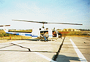

P.I.(s): Charles Walthall -- University of Maryland
Co-I(s): Darrel Williams -- NASA/GSFC; Samuel Goward -- Univ. of Maryland
Objectives: To acquire multispectral, bidirectional reflectance and surface temperature data of the study sites for assessments of spectral, spatial, temporal and bidirectional variability, and the impacts of these variabilities on vegetation indices. Some multi-altitude data was also acquired from the helicopter. A helicopter with a pointable, stabilized mount was used to carry a spectrometer (Visible and Near-IR), an infrared thermometer and a video camera. A sun tracking photometer was also deployed to provide data for calculations of irradiance an for atmospheric correction of the data. We are using the latest available version of the 6S atmospheric model for the calculations of irradiance and for atmospheric corrections.
|  The NASA Helicopter used in BOREAS | |
 The NASA Helicopter Scatterometer instrument |  The NASA Helicopter Optical instruments |
Objectives:
A Bell UH-1H helicopter with a pointable mount was used as a platform for a Barnes Modular Multiband Radiometer (MMR), a visible/near infrared Spectron Engineering SE590 spectroradiometer, an infrared thermometer (IRT), a pyranometer, a PAR sensor, two video cameras and a 70 mm photographic camera. An experimental sun tracking photometer was mounted on the helicopter cabin. The POLDER instrument and a 3 frequency scatterometer system were also flown on selected missions. The primary objective of this study was to acquire multispectral, bidirectional reflectance and surface temperature data of the study sites for assessments of spectral, spatial, temporal and bidirectional variability, and the impacts of these variables on vegetation indices.
Summary of Places and Times of Measurements:
Data was collected during IFCs 1, 2, and 3 at both study areas. The helicopter was deployed from a clearing near the Snow Castle Lodge in Candle Lake during SSA data collection, and from Thompson Airport during NSA data collection. Transit between study areas and reassembly or storage of the instrumentation system took less than a day. Between IFC-1 and IFC-2, the helicopter was stored at the Prince Albert Airport and between IFCs 2 and 3 it was stored at the Thompson Airport.
Equipment Used and Data Collected:
Data was collected while hovering over the study sites at 1000 feet above ground level and while slowly flying over transects leading away from the tower sites. Recognition of study sites on the surface by air crew was via maps, aerial photographs large concentrations of flagging at the sites and with the assistance of additional observers. Data collection was coordinated on selected days with surface-based measurements and other airborne measurements. All of the data was collected using only a nadir view angle to conserve mission time and thereby maximize the number of study sites covered in a single mission. Sun photometer data was collected during missions coincident with spectroradiometer and multiband radiometer data or immediately after. The collection strategy focused on obtaining measurements of each of the category I and II sites first, followed by category III sites and other surface covers deemed useful for providing a more complete measure of landscape spectral variability. Real-time voltage readouts from the sun photometer were used as additional decision making criteria when dealing with marginal sky conditions. Measurements of radiometric and spectral calibration sources were made between missions while on site.
Known Problems and Caveats:
In-field checks of selected spectroradiometer and multiband radiometer data showed that they appeared to be of high quality with some gaps due to system malfunctions. A considerable number of technical difficulties were encountered during the deployment which resulted in damage to the IRT, one video camera, the photographic cameras and the sun photometer system. Data from these systems are either incomplete or unusable as a result. Significant modifications to the data collection system and the mounting platforms were required during and between IFCs for data collection to continue.
RSS Overview || RSS-1 | RSS-2 | RSS-3 | RSS-4 | RSS-5 | RSS-6 | RSS-7 | RSS-8 | RSS-9 | RSS-10
RSS-11 | RSS-12 | RSS-13 | RSS-14 | RSS-15 | RSS-16 | RSS-17 | RSS-18 | RSS-19 | RSS-20
 Send a data request to the BOREAS Data Manager (BOREAS Investigators only)
Send a data request to the BOREAS Data Manager (BOREAS Investigators only)
E-Mail a comment on this page to the curator 
Send e-mail to Jaime Nickeson, the BORIS representative for the RSS group
Return to the RSS Overview
Return to the BOREAS Science Groups Overview
Return to the BOREAS Home Page
Last Updated: October 21, 1997
{kind=link}